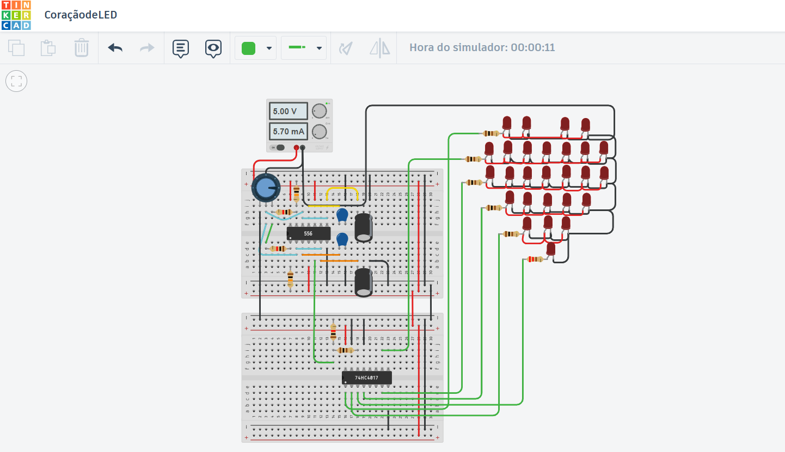
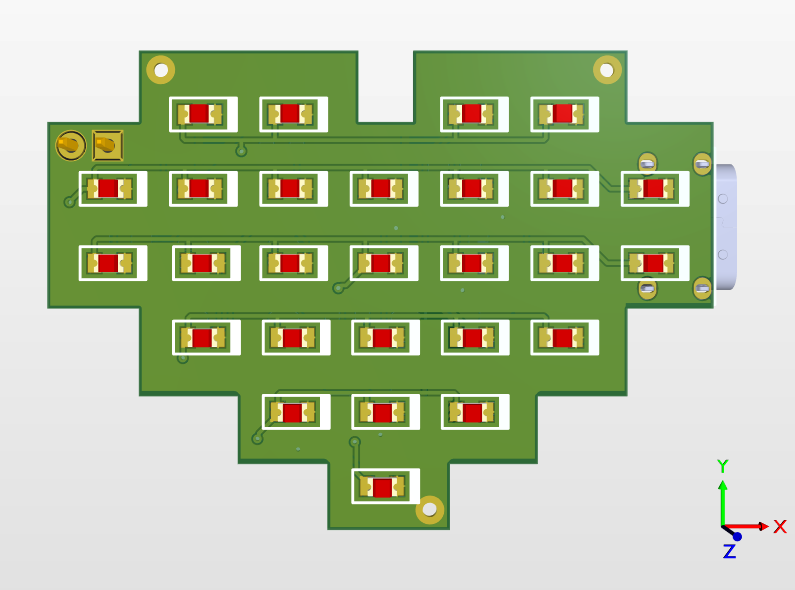

Do Tinkercad ao Altium: Criando um Coração de LED Pulsante (Sem Código!)
A importância da simulação e da eletrônica analógica no design de PCBs.

Muitas vezes, quando pensamos em projetos eletrônicos hoje em dia, já pensamos logo em um ESP32 ou Arduino. Mas existe uma beleza (e um desafio) incrível na eletrônica analógica pura.
Hoje vou mostrar o fluxo de desenvolvimento de um dos meus produtos favoritos: o Coração de LED. O desafio aqui era criar um circuito que "respirasse" (piscasse) sem usar nenhuma linha de programação.
1. A Simulação no Tinkercad 🛠️
Antes de abrir o Altium ou gastar dinheiro com fabricação, o primeiro passo foi validar a teoria. Para isso, usei o Tinkercad.
O circuito foge do básico e utiliza uma dupla clássica da eletrônica: o LM556 (Dual Timer) e o 74HC4017 (Contador Johnson).
O funcionamento é uma dança sincronizada: o LM556 atua como um oscilador, gerando pulsos de clock (o "ritmo" da batida). Esse sinal é enviado para o 4017, que conta esses pulsos e ativa suas saídas uma a uma em sequência. O resultado é que os grupos de LEDs acendem em etapas, criando um efeito de movimento fluido e "preenchendo" o coração, muito mais sofisticado que um simples pisca-pisca.
Por que simular?
- Ajuste de Frequência: No Tinkercad, eu pude trocar os valores dos capacitores e resistores em tempo real para decidir qual velocidade da piscada ficava mais bonita.
- Sem Código: Como é um circuito analógico, não existe firmware. A lógica está na física dos componentes! Isso reduz custos e complexidade.
2. O Design Profissional no Altium Designer 🖥️
Com a lógica validada, levei o projeto para o "mundo adulto": o Altium Designer. Aqui o objetivo não era mais testar se funcionava, mas sim fazer funcionar em um formato específico.
O desafio foi rotear as trilhas para que os LEDs formassem o desenho perfeito de um coração, mantendo o circuito oscilador compacto e escondido.
3. O Resultado Final ✨
O resultado é uma placa que ensina sobre carga e descarga de capacitores e chaves transistorizadas, tudo isso em um formato visualmente atraente. Sair da simulação simples do Tinkercad para uma PCB profissional no Altium mostra como ferramentas diferentes se complementam no fluxo de engenharia.
Gostou desse fluxo de trabalho? Se você quer aprender mais sobre simulação ou design de PCB, fique ligado nos próximos posts!